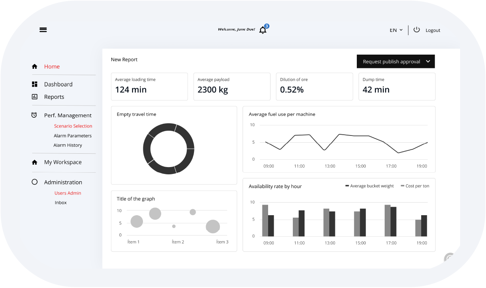
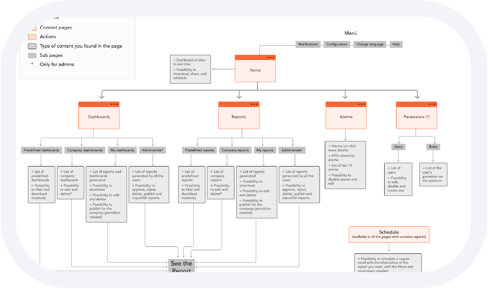
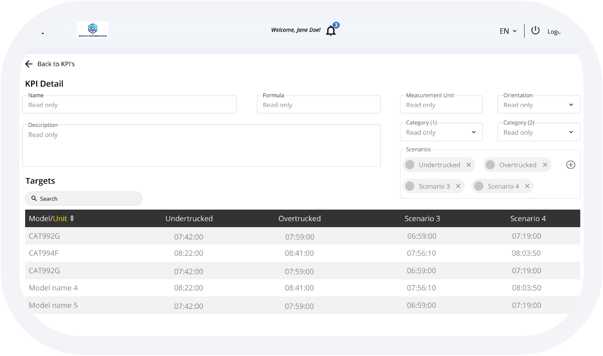
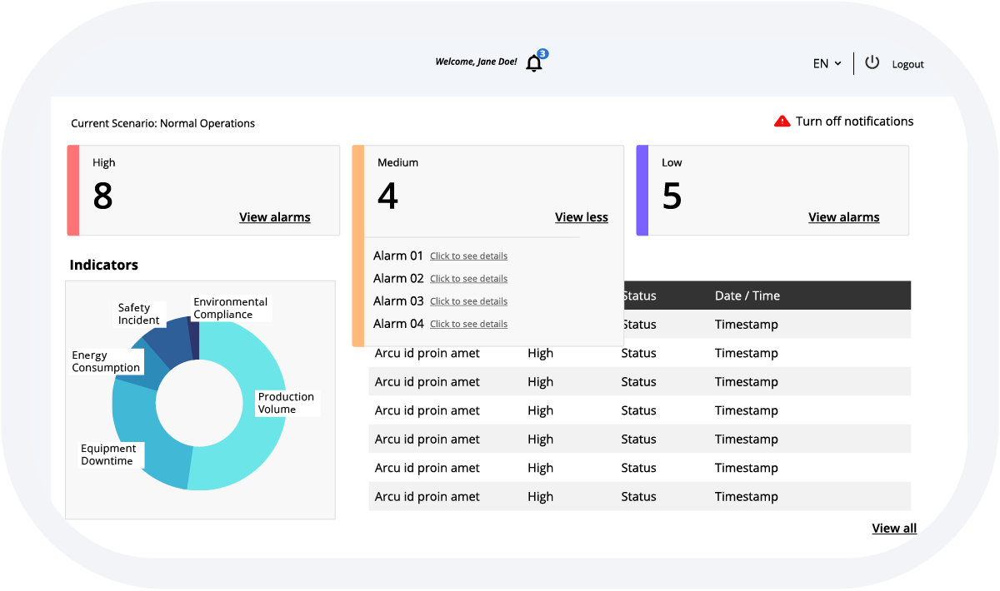
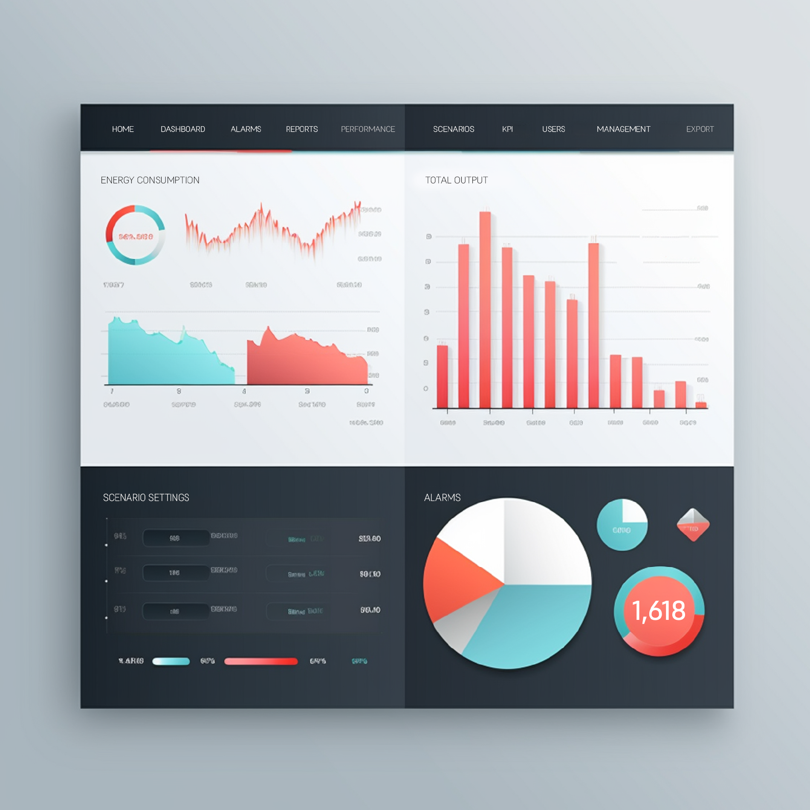
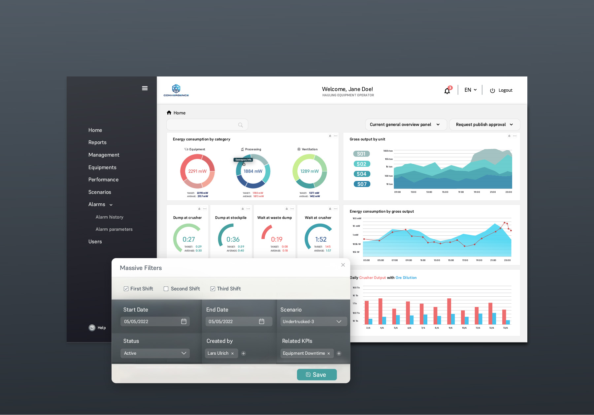

Convergence
Business intelligence app for the mining industry. With complex data analysis and multiple user types.

Untangling an interface mid-development
I was brought in as a UX/UI consultant during development, after the team recognized growing usability issues. The interface had become overwhelming, with multiple menus competing for attention and data.
Based on user conversations, I proposed unifying the navigation and separating dashboards from reports to reflect how users monitored current conditions versus analyzed historical data. This reduced on-screen density, but improved clarity and wayfinding. Reports were simplified to present multiple metrics in a clear, comparable format.
Restructuring in the fog of development
In practice, the app was already being built, and the absence of an initial UX foundation made iteration increasingly complex. I developed a sitemap to define tools and journeys for each user type. I interviewed users to test the sitemap by giving them relevant, specific tasks. The idea of splitting the reports from the dashboards proved to be very useful because the historic and current data were used differently.
This exercise helped us to find common ground between the user types, tasks, and flows to define key elements in the app. It also helped to organize the development of the app later on.


KPI Detail
I redesigned the key performance indicator user flow, adding a search field and moved the scenario creation tool to separate screen in order to keep the UI clean and consistent.
The new design combined different targets, scenarios, user types and categories in an intuitive layout. This empowered users to adapt the app to their operational requirements and focus on the metrics that matter most to them.
When everything is an alarm
I split the alarms experience into three focused areas: an alarm center, an alarm definition tool, and an alarm history view. Previously, all actions lived on a single screen, which made critical tasks slow and increased the risk of missed or misinterpreted alerts. Separating these flows reduced immediacy, but improved clarity in situations where errors have real operational consequences.
I added contextual details to each alarm, such as the related KPI and breach threshold, so users could assess severity at a glance. Actionable notifications supported immediate response, including escalation paths and corrective actions. Visual indicators helped users spot trends, compare sites or time periods, and identify patterns behind recurring issues.


Designing the UI, building the product
Building on the existing brand, I expanded its visual language into a production-ready user interface. I designed color systems for alarms, dashboards, and data types to clearly communicate status and priority, particularly in high-risk scenarios. Reusable UI components were created to ensure consistency across the app and support faster, more reliable development.
In a small, fast-moving team, this meant taking ownership beyond design and translating decisions directly into code. The application was built in React, and I implemented the visual layer using Material UI to maintain fidelity between design intent and the shipped product.

The Convergence app showed that good UX in high-stakes industries isn't about simplification, but about giving the right people the right information at the right moment.